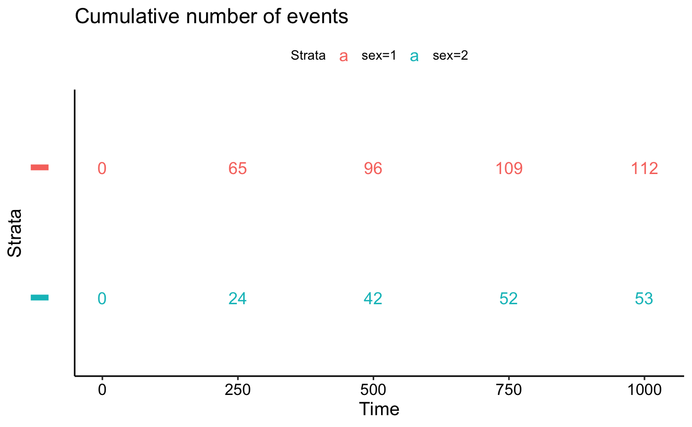
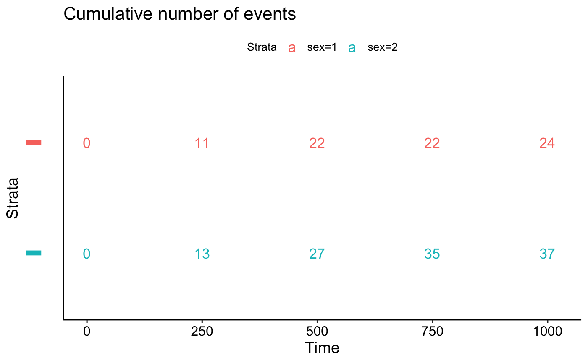

Plot Survival Tables
ggsurvtable.RdPlot survival tables:
ggrisktable(): Plot the number at risk table.ggcumevents(): Plot the cumulative number of events table.ggcumcensor(): Plot the cumulative number of censored subjects, the number of subjects who exit the risk set, without an event, at time t. Normally, users don't need to use this function directly.ggsurvtable(): Generic function to plot any survival tables.
Normally, users don't need to use this function directly. Internally used by the function
ggsurvplot.
ggrisktable(fit, data = NULL, risk.table.type = c("absolute", "percentage", "abs_pct", "nrisk_cumcensor", "nrisk_cumevents"), ...) ggcumevents(fit, data = NULL, ...) ggcumcensor(fit, data = NULL, ...) ggsurvtable(fit, data = NULL, survtable = c("cumevents", "cumcensor", "risk.table"), risk.table.type = c("absolute", "percentage", "abs_pct", "nrisk_cumcensor", "nrisk_cumevents"), title = NULL, risk.table.title = NULL, cumevents.title = title, cumcensor.title = title, color = "black", palette = NULL, break.time.by = NULL, xlim = NULL, xscale = 1, xlab = "Time", ylab = "Strata", xlog = FALSE, legend = "top", legend.title = "Strata", legend.labs = NULL, y.text = TRUE, y.text.col = TRUE, fontsize = 4.5, font.family = "", axes.offset = TRUE, ggtheme = theme_survminer(), tables.theme = ggtheme, ...)
Arguments
| fit | an object of class survfit. Can be a list containing two components: 1) time: time variable used in survfit; 2) table: survival table as generated by the internal function .get_timepoints_survsummary(). Can be also a simple data frame. |
|---|---|
| data | a dataset used to fit survival curves. If not supplied then data will be extracted from 'fit' object. |
| risk.table.type | risk table type. Allowed values include: "absolute" or "percentage": to show the absolute number and the percentage of subjects at risk by time, respectively. Use "abs_pct" to show both absolute number and percentage. Used only when survtable = "risk.table". |
| ... | other arguments passed to the function |
| survtable | a character string specifying the type of survival table to plot. |
| title | the title of the plot. |
| risk.table.title | The title to be used for the risk table. |
| cumevents.title | The title to be used for the cumulative events table. |
| cumcensor.title | The title to be used for the cumcensor table. |
| color | color to be used for the survival curves.
|
| palette | the color palette to be used. Allowed values include "hue" for the default hue color scale; "grey" for grey color palettes; brewer palettes e.g. "RdBu", "Blues", ...; or custom color palette e.g. c("blue", "red"); and scientific journal palettes from ggsci R package, e.g.: "npg", "aaas", "lancet", "jco", "ucscgb", "uchicago", "simpsons" and "rickandmorty". See details section for more information. Can be also a numeric vector of length(groups); in this case a basic color palette is created using the function palette. |
| break.time.by | numeric value controlling time axis breaks. Default value is NULL. |
| xlim | x and y axis limits e.g. xlim = c(0, 1000), ylim = c(0, 1). |
| xscale | numeric or character value specifying x-axis scale.
|
| xlab | main title and axis labels |
| ylab | main title and axis labels |
| xlog | logical value. If TRUE, x axis is tansformed into log scale. |
| legend | character specifying legend position. Allowed values are one of c("top", "bottom", "left", "right", "none"). Default is "top" side position. to remove the legend use legend = "none". Legend position can be also specified using a numeric vector c(x, y); see details section. |
| legend.title | legend title. |
| legend.labs | character vector specifying legend labels. Used to replace the names of the strata from the fit. Should be given in the same order as those strata. |
| y.text | logical. Default is TRUE. If FALSE, the table y axis tick labels will be hidden. |
| y.text.col | logical. Default value is FALSE. If TRUE, the table tick labels will be colored by strata. |
| fontsize | text font size. |
| font.family | character vector specifying text element font family, e.g.: font.family = "Courier New". |
| axes.offset | logical value. Default is TRUE. If FALSE, set the plot axes to start at the origin. |
| ggtheme | function, ggplot2 theme name. Default value is
theme_survminer. Allowed values include ggplot2 official themes: see
|
| tables.theme | function, ggplot2 theme name. Default value is
theme_survminer. Allowed values include ggplot2 official themes: see
|
Value
a ggplot.
Functions
ggrisktable: Plot the number at risk table.ggcumevents: Plot the cumulative number of events tableggcumcensor: Plot the cumulative number of censor tableggsurvtable: Generic function to plot survival tables: risk.table, cumevents and cumcensor
Examples
# Fit survival curves #::::::::::::::::::::::::::::::::::::::::::::::: require("survival") fit<- survfit(Surv(time, status) ~ sex, data = lung) # Survival tables #::::::::::::::::::::::::::::::::::::::::::::::: tables <- ggsurvtable(fit, data = lung, color = "strata", y.text = FALSE) # Risk table tables$risk.table# Number of cumulative events tables$cumevents# Number of cumulative censoring tables$cumcensor